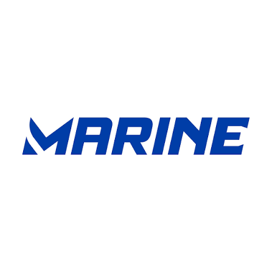
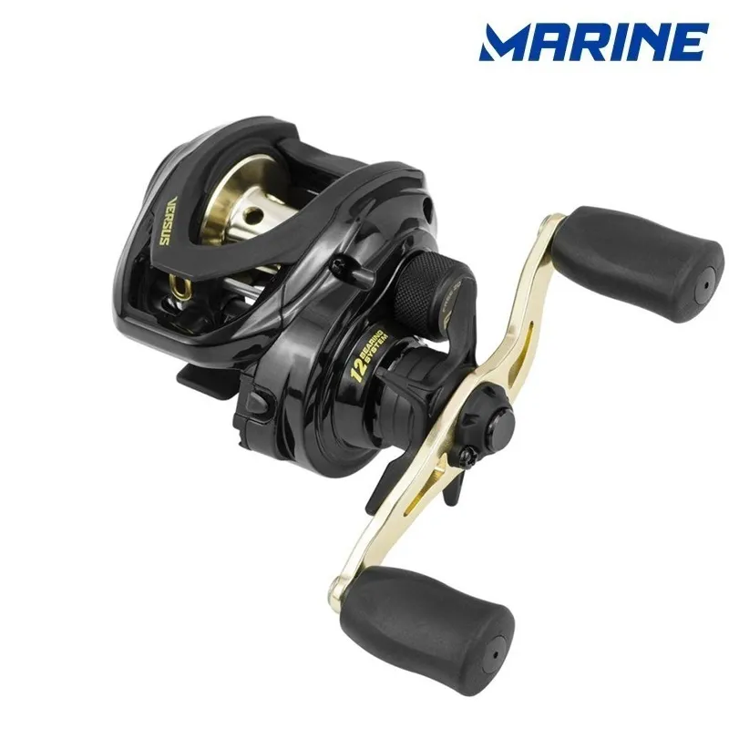

Meu primeiro post
Por: Samuel
sou colorado e estou muito feliz com uma vitória do inter contra o corinthians, assisti o jogo inteiro e percebi que o inter jogou muito bem , foi uma vitória de 2a0 que abriu uma boa vantagem na copa do Brasil.

Vou compartilhar conhecimentos sobre mim
Por: Samuel
sou colorado e estou muito feliz com uma vitória do inter contra o corinthians, assisti o jogo inteiro e percebi que o inter jogou muito bem , foi uma vitória de 2a0 que abriu uma boa vantagem na copa do Brasil.

Por: Samuel
nesse final de semana ocorreu a fishing show Brasil um evento onde marcas de pesca levam seus lançamentos para competirem para decidir o melhor do ano, minha marca favorita conseguiu 4 premios.


Por: Samuel
fui assitir o novo file do homem aranha chamdo "um novo dia" e particularmente não gsotei muito porque prefiro o mais antigos, mais não foi um filme ruim.

Por: Samuel
Boas-vindas ao meu novo blog! Aqui vou compartilhar dicas de programação e curiosidades da área de tecnologia.